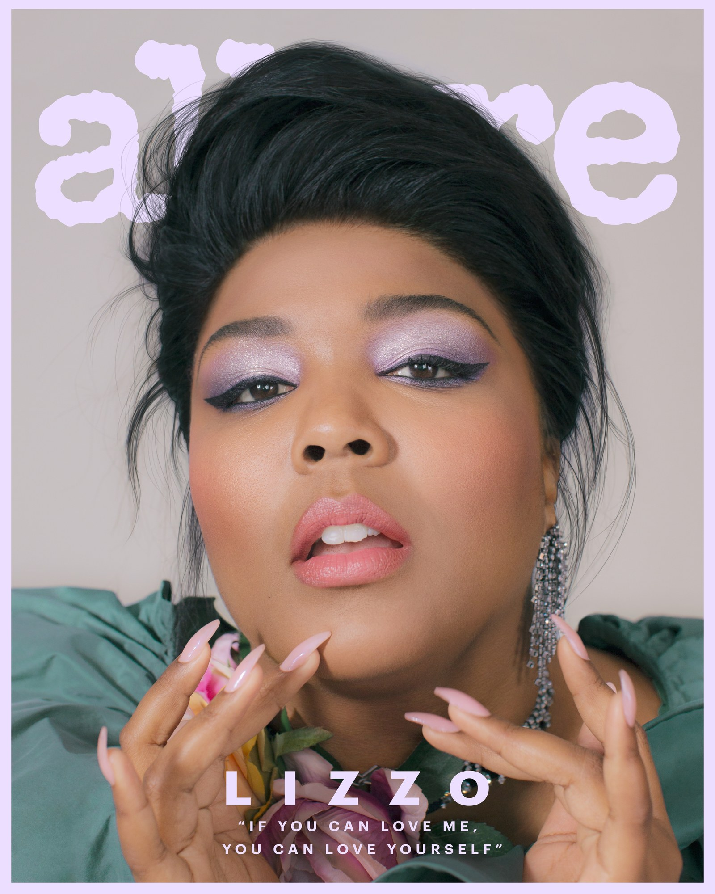
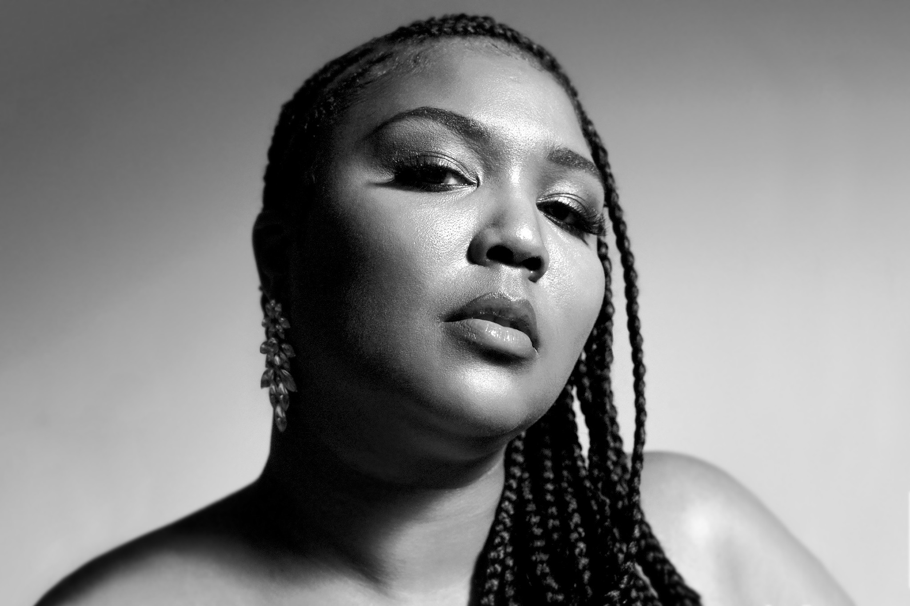

ROOTS

Lizzo grew up in Houston, Texas, and moved to Minneapolis, Minnesota, in 2011. She began her career in rapping while living in Texas. Lizzo started rapping as a teenager in Southwest Alief, Texas, which she calls "the SWAT." At 14, she formed a group called "Cornrow Clique" with her best friends. In Minneapolis, she performed with indie groups including the electro soul-pop duo, Lizzo & the Larva Ink. Dur ing this time she helped form three-piece all female rap/R&B group, The Chalice. In 2012, The Chalice released their first album, We Are the Chalice, which was locally successful.
Lizzobangers, Lizzo's debut album produced by Lazerbeak and Ryan Olson, was released on October 15, 2013 to regional and national success. The album focuses with laser precision solely on hip-hop — classic, boombox-blowing, chest-beating hip-hop, with extra greasy beats provided by Lazerbeak of Doomtree fame. Lizzo toured the US and UK in the fall of 2013 opening for Har Mar Superstar and additionally sang with his band. In October 2013, Lizzo won City Pages' "Picked to Click" award for best new Twin Cities artist. In November of the same year, Time named her one of 14 music artists to watch in 2014.
On June 1, 2014, Lizzo shared the stage with St. Paul and The Broken Bones, performing "A Change Is Gonna Come" together. On October 7, 2014, Lizzo appeared as the musical guest on the Late Show with David Letterman.
NEXT LEVEL

Lizzo appeared as a guest judge on the tenth season of RuPaul's Drag Race. On working with Prince, Lizzo says the experience was "surreal... almost like a fairytale" and that it was "something I will never actually get over".
In 2018, Lizzo toured both with Haim and Florence and the Machine and is beginning her own personal tour for Cuz I Love You in 2019.
After struggling with body issues at an early age, Lizzo advocates for body positivity and self-love, including making diversity the focus of her music, in regards to one's body (in "Fitness" and "Juice"), sexuality ("Boys"), race ("My Skin") and more. Her group of back-up dancers, the Big Grrrls, consists of all plus-size dancers. Highlighting body inclusivity and celebrating individuality, Lizzo appeared in ModCloth's "Say It Louder" campaign. It launched on June 11, 2018. In the same month, she sported the first plus-size outfit made for FIT's Future of Fashion runway show by Grace Insogna at an LGBTQ event at Pride Island.